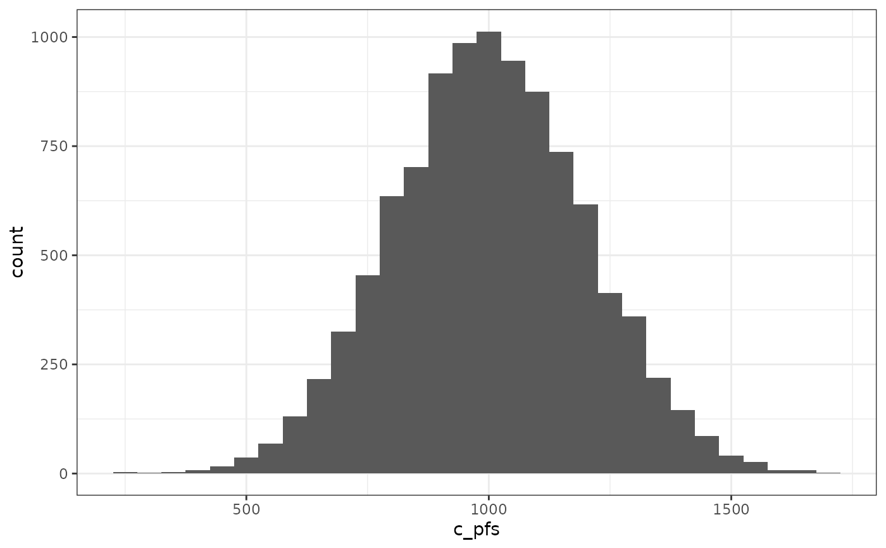

Visualise the distribution of a single parameter
vis_1_param.RdThis function plots the distribution of a single parameter.
Usage
vis_1_param(
df,
param = NULL,
binwidth = NULL,
type = "histogram",
dist = c("lnorm", "norm", "beta", "gamma"),
user_dist = NULL,
user_param_1 = NULL,
user_param_2 = NULL,
user_mean = NULL
)Arguments
- df
a dataframe.
- param
character. Name of variable of the dataframe for which the distribution should be plotted.
- binwidth
numeric. Determine the width of the bins to use, only applied in combination with "histogram". Default is 30 bins.
- type
character. Determine which plot to return: "histogram" for a histogram, "density" for a density plot. Default is "histogram".
- dist
character or vector of character. Determine which distribution to fit on the density plot.
- user_dist
character string. User-defined distribution to fit. Default value is NULL.
- user_param_1
character string. First parameter of the user-defined distribution to fit.
- user_param_2
character string. Second parameter of the user-defined distribution to fit.
- user_mean
numeric value. mean value to plot on the graph. Default is NULL
Details
The available distributions are: "norm" (normal), "beta", "gamma", "lnorm" (lognormal). TO CHECK –> ask for mean and SD/SE for the user-defined distribution???
Examples
# Generating histogram for the costs of progression-free health state, bins of 50 euros
data(df_pa)
vis_1_param(df = df_pa, param = "c_pfs", binwidth = 50)
